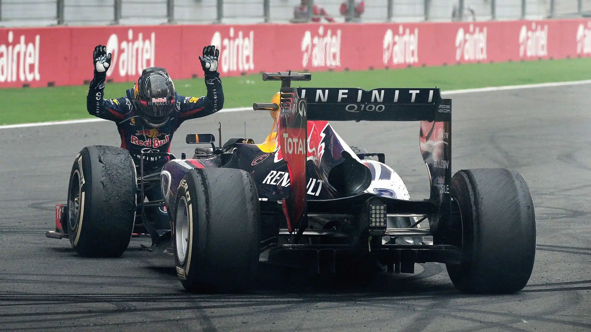

RedBull Racing

The Bad Guys
Red Bull Racing joined Formula 1 in 2005 and has since won 8 WDC and 6 WCC. They have got the reputation of being the enemy when Sebastian Vettel dominated the sport from 2010 to 2013 when he was frequently booed by fans for winning too much. This was replicated more recently with Max Verstappen during his 4 years on top. The management of Red Bull Racing has a bad reputation too with people such as Christian Horner and Helmut Marko who are presented as villans.
